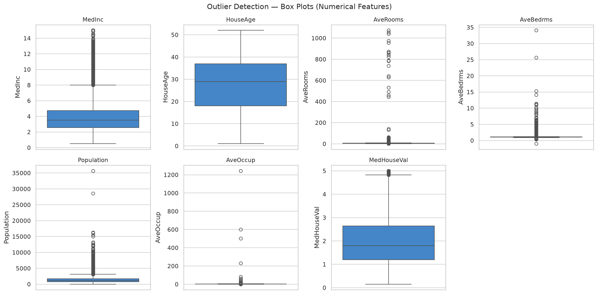
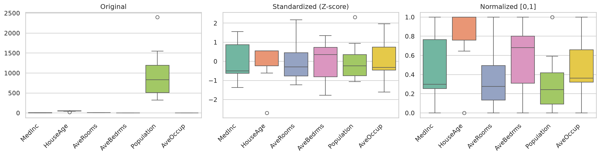
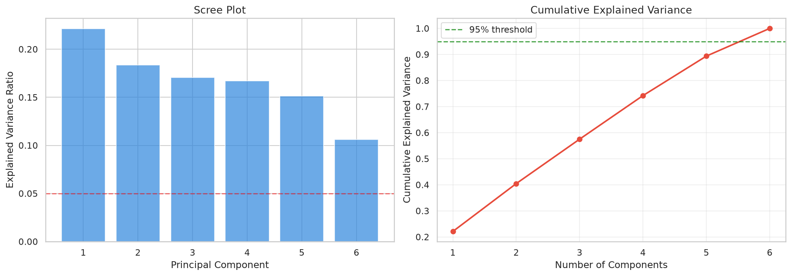
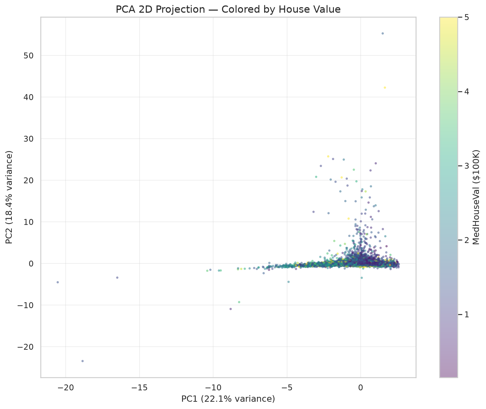

📊 Dataset: California Housing (20,640 rows, 8 numerical features)
▶ Run in Google ColabOUTPUT_DIR = os.path.join(BASE_DIR, 'suite1_project2_outputs'); os.makedirs(OUTPUT_DIR, exist_ok="kw">True)
np.random.seed(42) "kw">class="cmt"># "kw">for reproducibility of missing value injection
print_section("PROJECT 2: DATA PREPROCESSING PIPELINE")
"kw">class="cmt"># ── 1. Introduce missing values "kw">for demonstration ──
print_section("1. Data Quality Issues — Introducing Realistic Problems")
df_dirty = df.copy()
"kw">class="cmt"># Inject missing values randomly(5% "kw">in selected columns)
"kw">for col "kw">in ['AveRooms', 'AveBedrms']:
mask = np.random.random(len(df_dirty)) < 0.05
df_dirty.loc[mask, col] = np.nan
"kw">class="cmt"># Inject outliers "kw">in AveRooms
outlier_idx = np.random.choice(len(df_dirty), 20, replace="kw">False)
df_dirty.loc[outlier_idx, 'AveRooms'] = df_dirty['AveRooms'].max() * np.random.uniform(3, 8, 20)
"kw">class="cmt"># Inject an impossible value
df_dirty.loc[np.random.randint(0, len(df_dirty)), 'AveBedrms'] = -1
"kw">print("=== Data Quality Report ===")
"kw">print(f"Missing values:")
"kw">print(df_dirty.isnull().sum().to_string())
"kw">class="cmt"># ...df_dirty.loc[mask, col] = np.nan
"kw">class="cmt"># Inject outliers "kw">in AveRooms
outlier_idx = np.random.choice(len(df_dirty), 20, replace="kw">False)
df_dirty.loc[outlier_idx, 'AveRooms'] = df_dirty['AveRooms'].max() * np.random.uniform(3, 8, 20)
"kw">class="cmt"># Inject an impossible value
df_dirty.loc[np.random.randint(0, len(df_dirty)), 'AveBedrms'] = -1
"kw">print("=== Data Quality Report ===")
"kw">print(f"Missing values:")
"kw">print(df_dirty.isnull().sum().to_string())
"kw">print(f"\nTotal missing: {df_dirty.isnull().sum().sum():,} / {df_dirty.size:,}")
missing_pct = df_dirty.isnull().sum().sum() / df_dirty.size * 100
"kw">print(f"Missing percentage: {missing_pct:.2f}%")
"kw">class="cmt"># ── 2. Missing Value Handling ──
print_section("2. Handling Missing Values")
"kw">class="cmt"># Option A: Drop rows "kw">with missing("kw">if few)
df_drop = df_dirty.dropna()
"kw">print(f"After dropna(): {len(df_dirty)} → {len(df_drop)} rows(lost {len(df_dirty)-len(df_drop)})")
"kw">class="cmt"># Option B: Fill "kw">with mean/median
df_filled = df_dirty.copy()
"kw">class="cmt"># ...
Box plots with IQR outlier detection on real data
print_section("4. Feature Selection Strategies")
"kw">from sklearn.feature_selection "kw">import SelectKBest, f_regression, RFE
"kw">from sklearn.linear_model "kw">import LinearRegression
X = df_filled[num_cols].copy()
y = X.pop('MedHouseVal')
"kw">class="cmt"># 4a. Filter Method: Correlation-based
corr_with_target = X.corrwith(y).abs().sort_values(ascending="kw">False)
"kw">print("\n=== 4a. Filter Method — Correlation ">with Target ===")
"kw">print(corr_with_target.to_string())
"kw">class="cmt"># 4b. SelectKBest
selector = SelectKBest(score_func=f_regression, k='all')
selector.fit(X, y)
kbest_scores = pd.DataFrame({'Feature': X.columns, 'F_Score': selector.scores_, 'P_Value': selector.pvalues_})
kbest_scores = kbest_scores.sort_values('F_Score', ascending="kw">False)
"kw">print(f"\n=== 4b. SelectKBest(F-Regression) ===")
"kw">print(kbest_scores.to_string(index="kw">False))
"kw">class="cmt"># 4c. RFE(Wrapper method)
model = LinearRegression()
rfe = RFE(estimator=model, n_features_to_select=4)
rfe.fit(X, y)
"kw">class="cmt"># ...print_section("5. Scaling — Normalization & Standardization")
"kw">from sklearn.preprocessing "kw">import StandardScaler, MinMaxScaler
X_sample = X.head(10)
scaler_std = StandardScaler()
X_std = scaler_std.fit_transform(X_sample)
scaler_mm = MinMaxScaler()
X_mm = scaler_mm.fit_transform(X_sample)
"kw">print("Original(first 5 rows, 3 features):")
"kw">print(X_sample[['MedInc', 'HouseAge', 'Population']].head().to_string())
"kw">print("\nAfter StandardScaler(mean=0, std=1):")
std_df = pd.DataFrame(X_std[:5, :3], columns=['MedInc', 'HouseAge', 'Population'])
"kw">print(std_df.round(3).to_string())
"kw">print(f"\n Mean ≈ {X_std[:5, :3].mean():.6f}, Std ≈ {X_std[:5, :3].std(ddof=0):.6f}")
"kw">print("\nAfter MinMaxScaler(range [0,1]):")
mm_df = pd.DataFrame(X_mm[:5, :3], columns=['MedInc', 'HouseAge', 'Population'])
"kw">print(mm_df.round(3).to_string())
"kw">class="cmt"># Visualize scaling
fig, axes = plt.subplots(1, 3, figsize=(15, 4))
"kw">for ax, data, title "kw">in zip(axes, [X_sample.values, X_std, X_mm],
"kw">class="cmt"># ...
Original vs Standardized vs Normalized — real data
"kw">print("[Saved] p2_scaling_comparison.png")
"kw">class="cmt"># ── 6. Dimensionality Reduction(PCA) ──
print_section("6. Dimensionality Reduction — PCA")
"kw">from sklearn.decomposition "kw">import PCA
"kw">class="cmt"># Scale full data first
scaler = StandardScaler()
X_scaled = scaler.fit_transform(X)
pca = PCA()
pca_data = pca.fit_transform(X_scaled)
pca_components_count = len(pca.explained_variance_ratio_)
"kw">print(f"Original dimensions: {X.shape[1]}")
"kw">print(f"Components ">with 95% variance: {(pca.explained_variance_ratio_.cumsum() < 0.95).sum() + 1}")
"kw">print(f"\nExplained variance ratio per component:")
"kw">for i, (ev, cev) "kw">in enumerate(zip(pca.explained_variance_ratio_, np.cumsum(pca.explained_variance_ratio_))):
"kw">print(f" PC{i+1}: {ev:.4f} ({cev:.4f} cumulative)")
"kw">class="cmt"># PCA Scree + Cumulative
fig, axes = plt.subplots(1, 2, figsize=(14, 5))
axes[0].bar(range(1, pca_components_count+1), pca.explained_variance_ratio_, color='class="cmt">#2e86de', alpha=0.7)
axes[0].set_xlabel('Principal Component', fontsize=12)
"kw">class="cmt"># ...
Scree plot + cumulative variance

PCA 2D projection colored by real house values
1️⃣ IQR 方法中 outlier 的判断标准是什么？为什么用 1.5？
2️⃣ StandardScaler 和 MinMaxScaler 有什么区别？分别适合什么场景？
3️⃣ PCA 之后的前两个主成分能解释多少方差？剩下的方差去哪了？
4️⃣ 如果特征 A 和特征 B 的相关系数为 0.95，你应该怎么做？